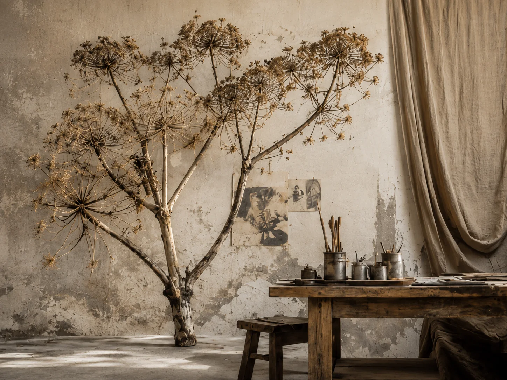
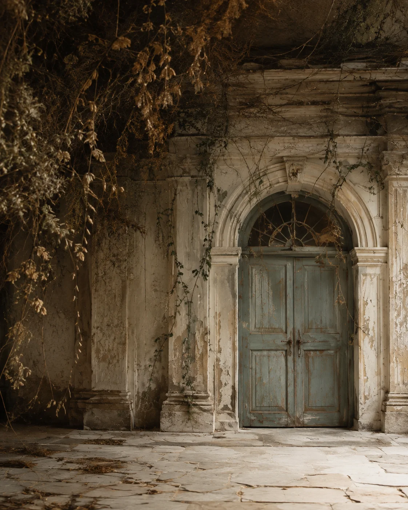

01
Personal Study · Environment
Botanical Structure
Scale, silhouette and natural irregularity explored as scenic form.

A growing collection of objects, material studies and imagined environments.
Personal work and visual studies are identified as such. Commissioned projects can be added here as the practice develops.
Scale, silhouette and natural irregularity explored as scenic form.

A study in making, surface and the evidence of the hand.

Linen, aged surfaces and organic elements used to build quiet tension in a space.

Age, erosion and layered material as visual language.

A study of architectural ageing, botanical dressing and narrative detail.
